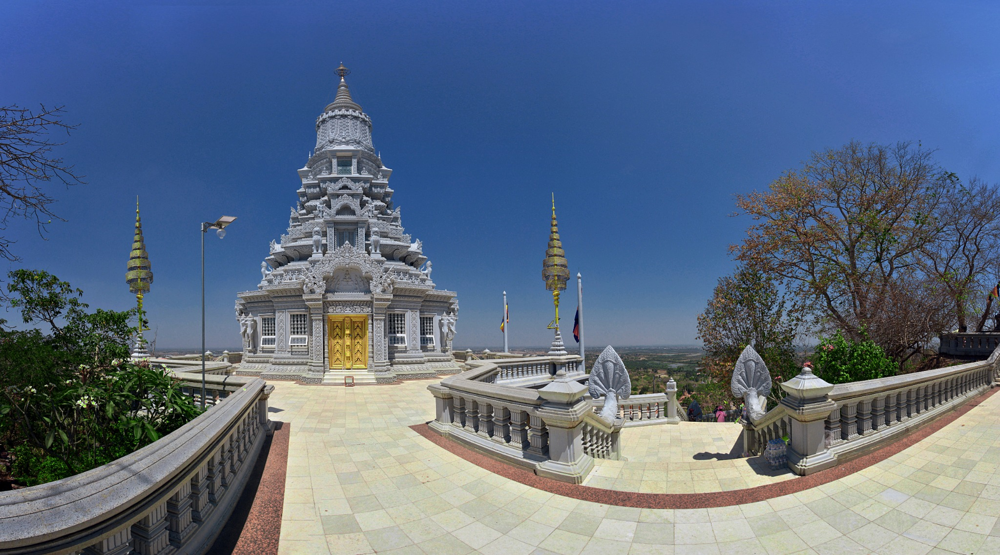

AV
VISAKHAPATNAM · MARKET REDEVELOPMENT
Poorna Market.
The Living Market Spine — explore redeveloped streets, vendors and public spaces in 360°.

LIVING MARKET SPINE · SAMPLE TOUR
Walk through the future market.
Explore proposed streets, market halls and community spaces. Demo imagery will be replaced with Enscape renders.
CHOOSE YOUR EXPERIENCE
Explore Poorna Market
Follow a curated design journey, or move freely between panoramas.
Your market experience
Switch between guided walkthrough and free exploration
Poorna MarketArrival Court · 01 / 08
FREE EXPLORATIONDRAG TO LOOK AROUND ↔
CHAPTER 01 / URBAN ARRIVAL
Discover the redeveloped market.
⌖ YOUR LOCATION
MARKET SPINE
Arrival Court
ILLUSTRATIVE PLAN360° MONOSCOPIC • QUEST 3 COMPATIBLE • A-FRAME / WEBXR
CREATE / CONFIGURE
Tour editor
Changes remain in this browser until exported. GitHub Pages cannot save edits to your repository automatically.
PROPERTIES
Scene settings
Yaw sets left/right position, pitch sets vertical position. Use preview to check hotspot alignment.